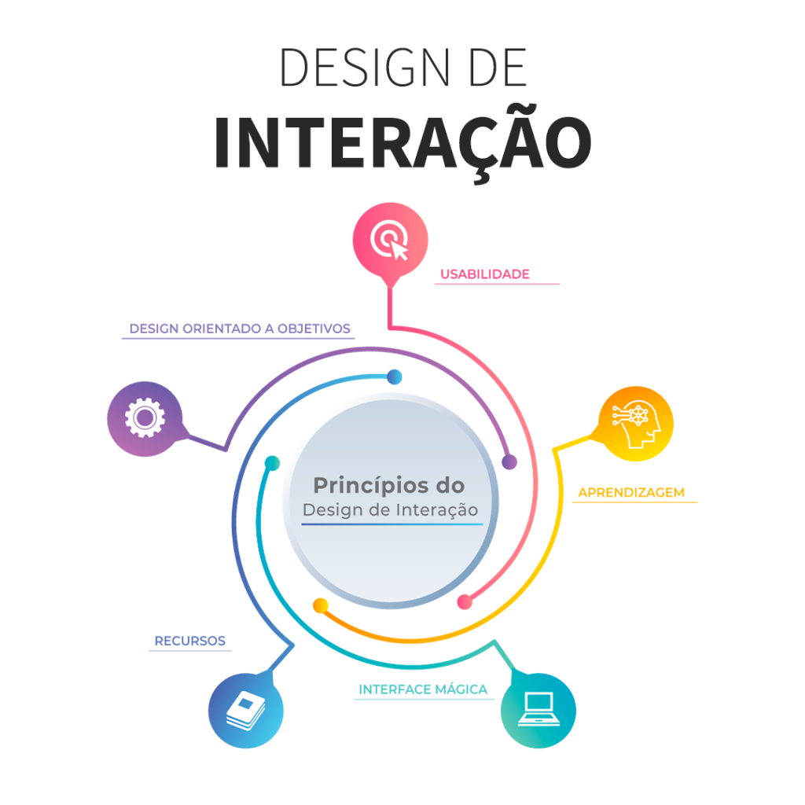

Design de Interação
Design de produtos interativos que fornecem suporte às atividades cotidianas das pessoas, seja no lar ou no trabalho;
Especifícamente, significa criar experiências que melhorem e estendam a maneira como as pessoas trabalham, se comunicam e se interagem;
Essencialmente isso significa desenvolver produtos interativos que sejam fáceis, agrádaveis de utilizar e eficazes - sempre na perspectiva do usuário.

Design de produtos interativos que fornecem suporte às atividades cotidianas das pessoas, seja no lar ou no trabalho;
Especifícamente, significa criar experiências que melhorem e estendam a maneira como as pessoas trabalham, se comunicam e se interagem;
Essencialmente isso significa desenvolver produtos interativos que sejam fáceis, agrádaveis de utilizar e eficazes - sempre na perspectiva do usuário.